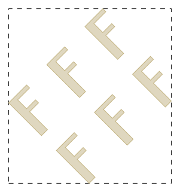

gdstk.Reference¶
-
class
gdstk.Reference(cell, origin=0, 0, rotation=0, magnification=1, x_reflection=False, columns=1, rows=1, spacing=0, 0)¶ Reference to another cell.
References are used to instance repetitive geometries across different cells, optionally applying a transformation.
- Parameters
cell (gdstk.Cell, gdstk.RawCell, str) – referenced cell.
origin – Insertion position of the referenced cell.
rotation – Cell rotation angle (in radians).
magnification – Geometry scaling for this reference.
x_reflection – If
True, the geometry is reflected across the horizontal axis before rotation.columns – Number of repetitions along the horizontal direction.
rows – Number of repetitions along the vertical direction.
spacing – Distance between insertion points of adjacent columns and rows.
Examples
>>> polygons = gdstk.text("F", 10, (0, 0)) >>> f_cell = gdstk.Cell("F_CELL") >>> f_cell.add(*polygons) >>> ref = gdstk.Reference(f_cell, rotation=numpy.pi / 2) >>> array_ref = gdstk.Reference(f_cell, columns=3, rows=2, ... spacing=(8, 10))
Notes
If
cellis a str (cell name), operations on the referenced cell are not performed, such as computing the bounding box.Methods
Calculate the bounding box of this reference.
copy()Create a copy this reference.
delete_property(attr)Delete property of this polygon.
get_property(attr)Return a property of this polygon.
set_property(attr, value)Set a GDSII property for this reference.
Attributes
Cell referenced by this object.
Number of columns in the array.
Reference magnification.
Reference origin.
Reference rotation angle (in radians).
Number of rows in the array.
Spacing between copies in the array.
Reference reflection across the x axis.
-
bounding_box() → tuple¶ Calculate the bounding box of this reference.
- Returns
The lower-left and upper-right corners of the bounding box of the polygon:
((min_x, min_y), (max_x, max_y)).
Notes
This operation can be slow because the precise bounding box calculation requires recursively querying the polygonal representations of all shapes created by this reference.
Examples
>>> polygons = gdstk.text("F", 10, (0, 0)) >>> f_cell = gdstk.Cell("F_CELL") >>> f_cell.add(*polygons) >>> array_ref = gdstk.Reference(f_cell, rotation=numpy.pi / 4, ... columns=3, rows=2, spacing=(8, 10)) >>> bbox = array_ref.bounding_box() >>> print(bbox) ((-12.816310409006173, 1.7677669529663689), (11.313708498984761, 27.66555281392367)) >>> polygon_bb = gdstk.rectangle(*bbox, datatype=1)
-
cell¶ Cell referenced by this object.
Notes
This attribute is read-only.
-
columns¶ Number of columns in the array.
-
copy() → gdstk.Reference¶ Create a copy this reference.
- Returns
Copy of this reference.
-
delete_property(attr) → self¶ Delete property of this polygon.
- Parameters
attr (number) – Property number.
-
get_property(attr) → str¶ Return a property of this polygon.
- Parameters
attr (number) – Property number.
- Returns
Property value. If the property number does not exist,
Noneis returned.- Return type
str or None
-
magnification¶ Reference magnification.
-
origin¶ Reference origin.
-
rotation¶ Reference rotation angle (in radians).
-
rows¶ Number of rows in the array.
-
set_property(attr, value) → self¶ Set a GDSII property for this reference.
- Parameters
attr (number) – Property number.
value (str) – Property value.
-
spacing¶ Spacing between copies in the array.
-
x_reflection¶ Reference reflection across the x axis.